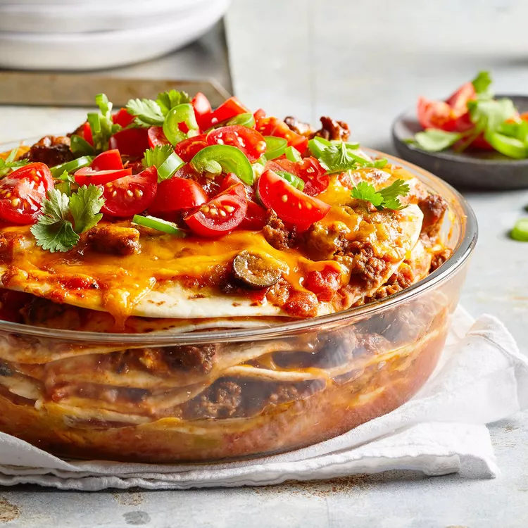

Burrito Pie

Description
A Mexican-style burrito pie equipped with tortilla layers sandwiching diced chili peppers, garlic, and refried beans. Stack mouthwatering layers to the sky, then bake until the cheese is bubbling.
Try this mouthwatering Burrito Pie recipe that is sure to impress your family. With each bite, they'll be asking for more!
Ingredients:
- 2 pounds ground beef.
- 1 onion, chopped.
- 2 teaspoons minced garlic.
- 1 (2 ounce) can black olives, sliced.
- 1 (4 ounce) can diced green chili peppers.
- 1 (10 ounce) can diced tomatoes with green chile peppers
- 1 (16 ounce) jar taco sauce
- 2 (16 ounce) cans refried beans
- 12 (8 inch) flour tortillas
- 9 ounces shredded Colby cheese
Steps
- Preheat oven to 350 degrees F (175 degrees C).
- In a large skillet over medium heat, saute the ground beef for 5 minutes. Add the onion and garlic, and saute for 5 more minutes.
- Spread a thin layer of the meat mixture in the bottom of a 4 quart casserole dish.
- Bake for 20 to 30 minutes in the preheated oven, or until cheese is slightly brown and bubbly.
- Cover with foil and bake.
- Let the burrito-pie rest before serving.